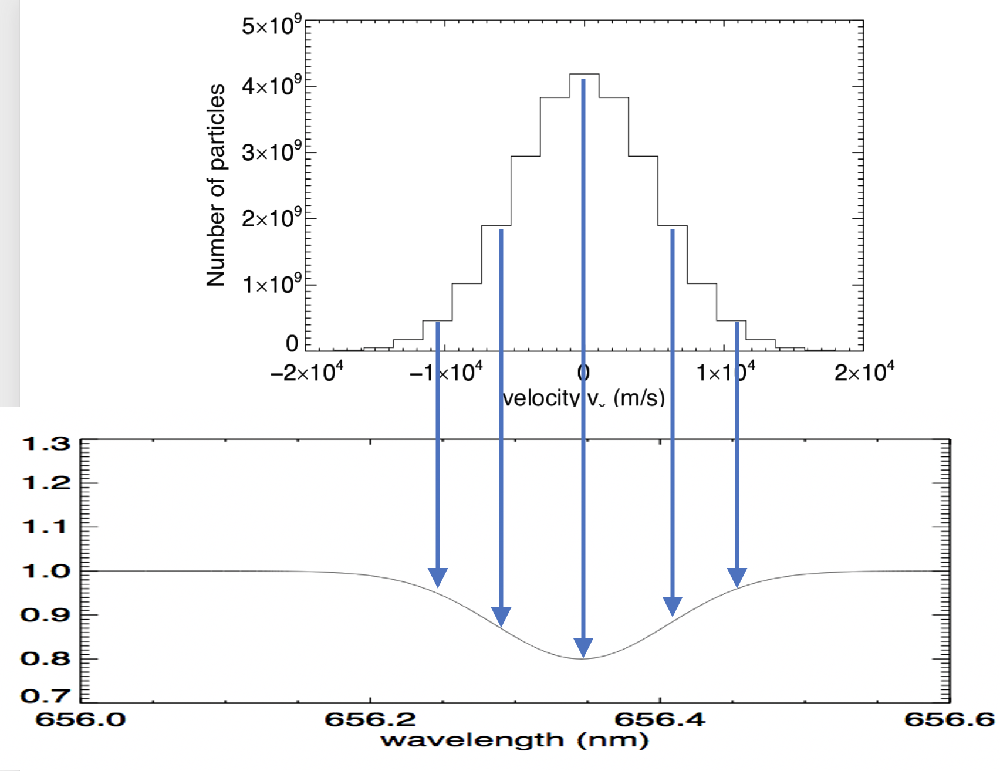

Forrige side🙂 🙁Formen til spektrallinjer

Standardavvik for hastighet er $\sigma_v=\sqrt{\frac{kT}{m}}$. De partiklene som har vx lik dette standardavviket vil gi opphav til en Dopplereffekt $\Delta\lambda=\lambda_0\frac{v_x}{c}$ som insatt for vx gir $\Delta\lambda=\frac{\lambda_0}{c}\sqrt{\frac{kT}{m}}$ og som dermed tilsvarer standardavviket for spektrallinja og dermed også er et mål på bredden til linja. Dermed ser vi at vi fra bredden av spektrallinja har et direkte mål på temperaturen til gassen, gitt at du kjenner massen m til atomene/molekylene. Neste side